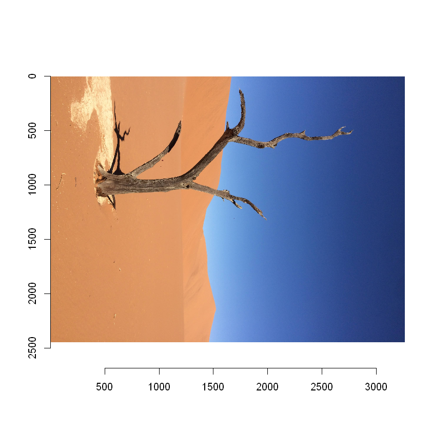
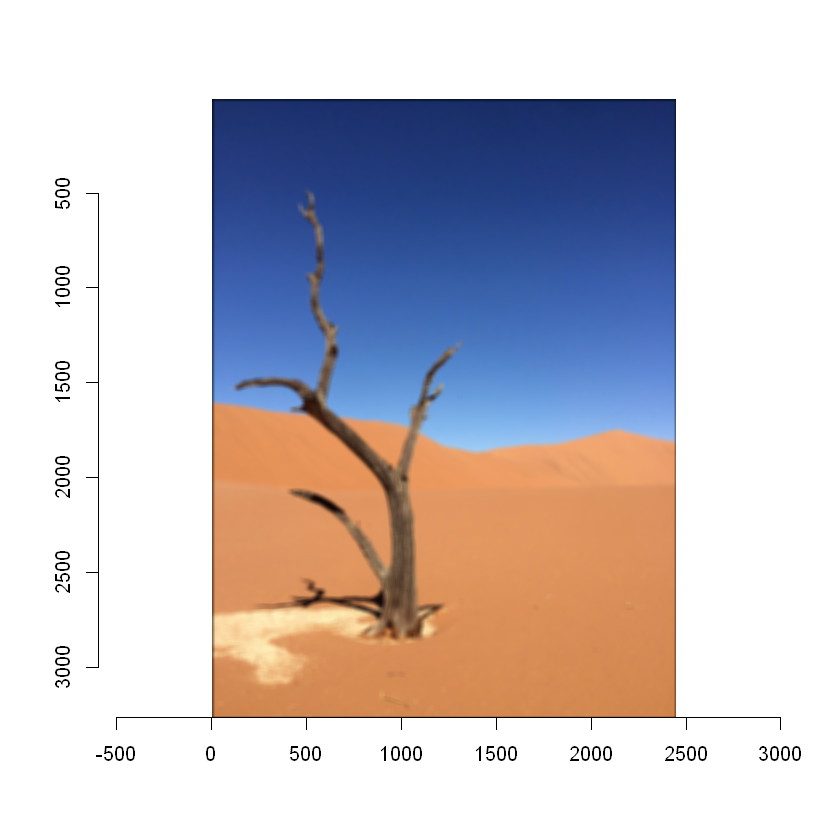

A fun R utility package to make your pictures perfect! The package enables users to process, manipulate, and gather data about their images.
Installation
You can install the released version of pictureperrrfect using the following commands from your Rstudio console:
# install devtools if needed
install.packages("devtools")
# install pictureperrrfect
devtools::install_github("UBC-MDS/pictureperrrfect")Features
The package pictureperrrfect is an image untility package intended to manipulate images through a variety of functions. The intention is that a user with little to no experience can quickly call a function to alter, compress, or print out statistics for an image. Internally, the functions make use of matrix operations for quick and efficient processes.
There are four main functions planned for development and they are outlined below. Each function can be called on colour images or greyscale images. Additional functions may be added if time permits.
Function 1 filter_perrrfect: With this function, a user can either select a predefined filter or create their own custom filter. The image is then passed through the filter and output for the user to view.
Function 2 get_property_perrrfect: The goal of this function is to take an image and return statistics related to the different colour bands within the image. These statistics include mean and median values for each channel as well as a plotted histogram of values for each channel.
Function 3 compression_perrrfect: Using a pooling algorithm, this function will apply lossy compression to given image. The user will be able to specify the type of pooling (max, min, or mean) as well as the kernel size.
Function 4 rotation_perrrfect: This final function applies a rotation to a given image and outputs the result. A user can specifiy the number of degrees they wish the image to be rotated.
Image processing is very popular in the R ecosystem so we are aware that we are not reinventing the wheel with our package, but we hope to gain a deeper understanding of the inner workings of an image package. Specifically, the “imager” library has functions that rotate, flip an image, or filter which covers 3 of our 4 functions.
Dependencies
- R
- imager
- magrittr,
- stats,
- imager,
- tidyverse,
- dplyr,
- reticulate,
- abind,
- devtools,
- knitr
- testthat (>= 3.0.0)
- covr
- here
Usage
# Load the image
namibia <- load.image("img/namibia.jpg")
plot(namibia)
# Rotate the image 90 degrees
rotated_namibia <- rotation_perrrfect(namibia, 1)
plot(rotated_namibia)
compress_namibia <- compression_perrrfect(namibia,
kernel_size = 10,
pooling_function = "max"
)
plot(compress_namibia)
filtered_namibia <- filter_perrrfect(namibia,
filter_type = "blur",
filter_size = 30, custom_filter = NULL
)
plot(filtered_namibia)
print(get_property_perrrfect(namibia))
#>$width
#>[1] 2448
#>
#>$height
#>[1] 3264
#>
#>$pixels
#>[1] 7990272
#>
#>$R
#>[1] 0.5360028 0.4549020
#>
#>$G
#>[1] 0.4792823 0.5490196
#>
#>$B
#>[1] 0.5216981 0.4627451Contributors
We welcome and recognize all contributions. You can find our contribution guidelines here.
- Chad Neald: @ChadNeald
- Debananda Sarkar: @debanandasarkar
- Dustin Burnham: @dusty736
- Kangbo Lu: @KangboLu